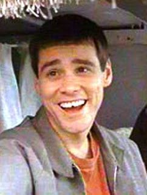
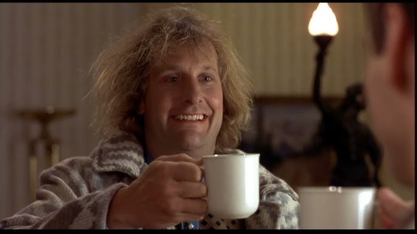
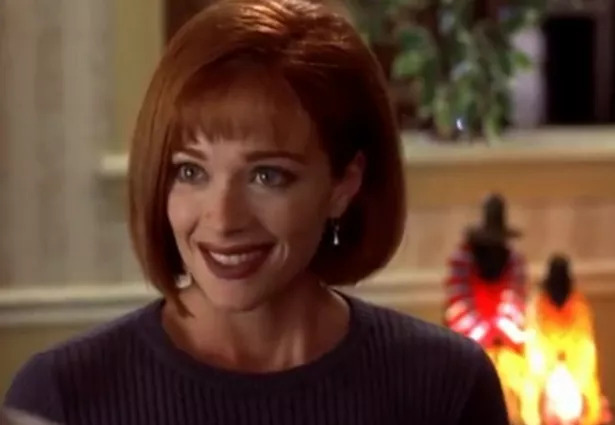

In "Dumb and Dumber," Lloyd Christmas and Harry Dunne, two not-so-sharp buddies, find a suitcase full of cash that Mary Swanson left in Harry's car. They hit the road to Aspen, Colorado, to return it, clueless that it's tied to a kidnapping. With hired killers and cops on their tail, and Lloyd crushing on Mary, their wild road trip puts their goofy friendship and their wits (or lack thereof) to the ultimate test. It's a laugh-a-minute, cross-country caper!
CharactersLloyd Christmas Played by: Jim Carrey Harry Dunne  Played by: Jeff Daniels Mary Swanson  Played by: Lauren Holly |